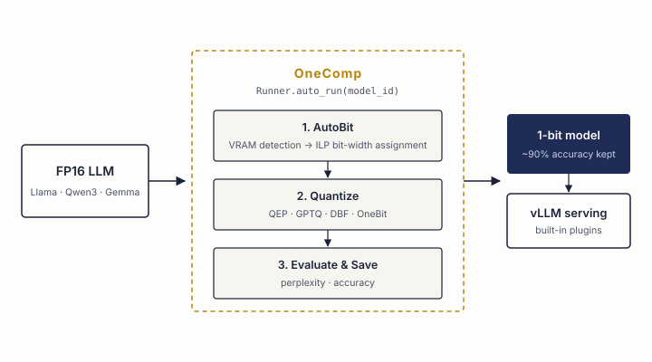
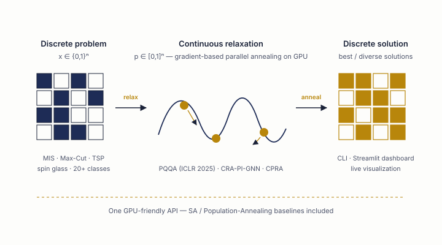

オープンソースソフトウェアOpen-Source Software
Software
理論研究の成果を, 実際に動くツールとして公開しています。LLMの極限圧縮, GPU組合せ最適化, 学習理論のシミュレーション — すべて pip install から始められます。 Theory shipped as working tools: extreme LLM compression, GPU combinatorial optimization, and learning-theory simulation — all one pip install away.
OneComp
Fujitsu One Compression
大規模言語モデルのポストトレーニング量子化を自動化するOSSライブラリ (MITライセンス). GPTQ, DBF, RTNといった標準手法に加え, NeurIPS 2025採択のQEP (Quantization Error Propagation) やLPCDなどの研究成果を統合. GPUのVRAMを自動検出し, ILPベースで層ごとの最適ビット幅を割り当てるAutoBitにより, 量子化・評価・保存までを完全自動で実行する. An open-source library (MIT) for automated post-training quantization of LLMs. Alongside standard methods (GPTQ, DBF, RTN), it integrates research results such as QEP — Quantization Error Propagation (NeurIPS 2025) — and LPCD. AutoBit detects available GPU VRAM and assigns per-layer bit-widths via ILP, running quantization, evaluation, and saving fully automatically.
pip install onecomp
from onecomp import Runner
Runner.auto_run(model_id="meta-llama/Llama-2-7b-hf")- QEP: 量子化誤差を後続層へ伝播補正 (NeurIPS 2025)QEP: propagates and compensates quantization error across layers (NeurIPS 2025)
- AutoBit: VRAM自動推定 + ILPによる混合精度ビット割当AutoBit: automatic VRAM estimation + ILP-based mixed-precision assignment
- 1bit / 1.58bit級の極限量子化 (DBF, OneBit) に対応Extreme low-bit quantization down to 1-bit / 1.58-bit (DBF, OneBit)
- vLLMプラグインで量子化モデルをそのままサービング可能Serve quantized models directly with vLLM via built-in plugins
- Llama / Qwen3 / Gemma など主要アーキテクチャで検証済みVerified on major architectures: Llama, Qwen3, Gemma, and more

QQA4CO
Parallel Quasi-Quantum Annealing
組合せ最適化・スピングラス最適化のための研究グレードPyTorchツールキット. 離散問題を連続空間へ持ち上げ, GPU上の勾配ベース並列サンプリングで離散解へアニールする. ICLR 2025採択のPQQAに加え, CRA-PI-GNN (NeurIPS 2024), CPRA (TMLR 2025) を単一のAPIに統合. MIS, Max-Cut, TSP, スピングラスなど20以上の問題クラスと, SA・ポピュレーションアニーリングのGPU並列ベースラインを同梱する. A research-grade PyTorch toolkit for combinatorial and spin-glass optimization. It lifts discrete problems into continuous space and anneals toward discrete minima with gradient-based parallel sampling on GPU. Unifies PQQA (ICLR 2025), CRA-PI-GNN (NeurIPS 2024), and CPRA (TMLR 2025) behind one API, with a 20+ class problem catalogue and GPU-parallel SA / population-annealing baselines.
pip install "qqa[all]"
qqa gui # launch the Streamlit dashboard- PQQAソルバー: 勾配ベース並列サンプリングによる準量子アニーリング (ICLR 2025)PQQA solver: quasi-quantum annealing with gradient-based parallel sampling (ICLR 2025)
- 20+の問題クラス: QUBO, ナップサック, TSP, スピングラス, パーセプトロンなど20+ problem classes: QUBO graphs, knapsack, TSP, spin glasses, perceptrons, and more
- Streamlitダッシュボードで緩和変数の離散化をライブ可視化Live Streamlit dashboard visualizing relaxed variables as they discretize
- ブラウザで試せるホスト版デモを公開中A hosted, zero-install web demo is available

StatPhys-ML
Statistical Mechanics Simulation Playground for Machine Learning
機械学習モデルの理論解析(レプリカ法・オンライン学習ODE)と数値実験を統一インターフェースで扱うPythonパッケージ. Teacher-Student設定を軸に, 22種類のデータセット生成器と19種類の学習モデル(線形回帰, コミッティマシン, 2層NN, Transformer, SSMなど)を備え, 理論予測とシミュレーションの自動比較・出版品質の可視化までを一貫して行える. A Python package unifying theoretical analysis (replica method, online-learning ODEs) and numerical experiments for machine learning under a single interface. Built around the teacher-student setting, it ships 22 dataset generators and 19 learning models (linear, committee machines, two-layer networks, Transformers, SSMs, ...), with automatic theory-vs-simulation comparison and publication-quality visualization.
git clone https://github.com/Yuma-Ichikawa/StatPhysMLSimPlayground.git
cd StatPhysMLSimPlayground
pip install -e ".[dev]"- レプリカ法・オンライン学習ODEによる理論ソルバーを搭載Theory solvers based on the replica method and online-learning ODEs
- 22のデータセット生成器と19の学習モデル (Transformer, SSM, Hopfieldを含む)22 dataset generators and 19 learning models (incl. Transformers, SSMs, Hopfield)
- MSE, LASSO, Huber, Hinge, Logisticなど多様な損失関数に対応Diverse loss functions: MSE, LASSO, Huber, Hinge, Logistic, and more
- 理論とシミュレーションの自動比較フレームワークA unified framework with automatic theory-simulation comparison
